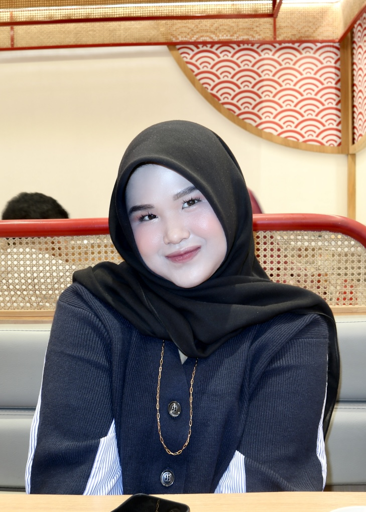

Foto Profil

📝 Tentang Saya
Halo! Perkenalkan nama saya Khaisya Rizky Amanda. Saya lahir di
Medan pada tanggal 14 November 2006. Saat ini saya merupakan
mahasiswa jurusan Sistem Informasi di Universitas Muhammadiyah Sumatra Utara.
Saya memiliki ketertarikan yang besar dalam bidang teknologi,
terutama pada web development, application development, dan UI design.
Saya dikenal sebagai pribadi yang bertanggung jawab, disiplin, dan memiliki kemauan
belajar yang tinggi. Saya selalu berusaha mengembangkan kemampuan diri dan terbuka
terhadap hal-hal baru di dunia teknologi.
📋 Data Pribadi
- Nama Lengkap: Khaisya Rizky Amanda
- Tempat, Tanggal Lahir: Medan, 14 November 2006
- Alamat: Jl. Bukit Barisan I No. 7, Medan Timur
- Status: Belum Menikah
- Agama: Islam
- Kewarganegaraan: Indonesia
🎨 Hobi & Minat
- Programming dan coding
- Mendesain dan mengelola data
- Makeup dan memasak
- Traveling dan shopping
- Bermain game
- Menonton film dan series
🎓 Riwayat Pendidikan
-
SD Negeri 5 Kota Langsa (2012 - 2018)
Lulus
-
SMP Negeri 1 Kota Langsa (2018 - 2021)
Lulus
-
SMA Negeri 1 Jakarta (2021 - 2024)
Jurusan IPA, Lulus
-
Universitas Muhammadiyah Sumatra Utara (2024 - Sekarang)
Jurusan Sistem Informasi
💻 Keterampilan
- Programming Languages: HTML, Python, Java, JavaScript,CSS (Basic)
- Web Development: Front-End (Basic)
- UI Design: Layouting, Color & Typography
- Database: MySQL
- Tools: NetBeans, VS Code, Microsoft Office, Figma, Canva, Draw.io
- Languages: Indonesia (Native), English (Basic)
💼 Pengalaman Proyek
-
Aplikasi Kasir
Membuat aplikasi kasir menggunakan Java (NetBeans) dengan database MySQL untuk mengelola data produk dan transaksi
-
Aplikasi CRUD
Mengembangkan aplikasi Create, Read, Update, Delete (CRUD) menggunakan Java dan MySQL
-
Web Server Sederhana
Melakukan konfigurasi web server Apache (XAMPP) untuk menjalankan dan menguji aplikasi berbasis web
-
Aplikasi Sederhana (Python)
Membuat aplikasi sederhana menggunakan Python untuk pengolahan data dan logika program dasar
-
Desain UI Aplikasi
Mendesain antarmuka aplikasi menggunakan Figma dengan memperhatikan layout, warna, dan tipografi
-
Perancangan Sistem
Membuat Entity Relationship Diagram (ERD) dan Data Flow Diagram (DFD) sebagai perancangan sistem informasi
📞 Kontak Saya
📱 Social Media
TikTok | |
Instagram